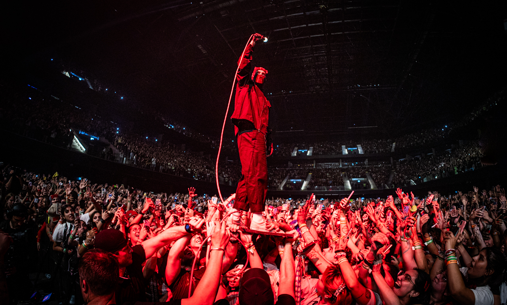
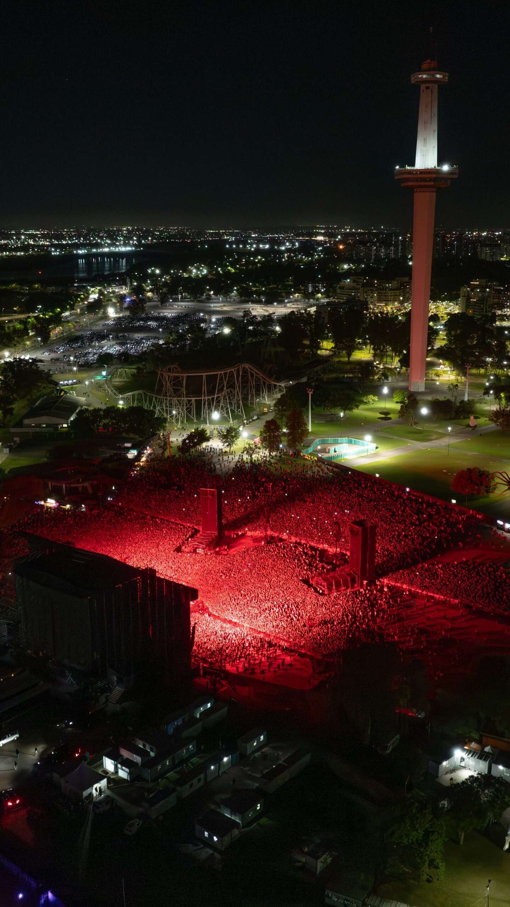
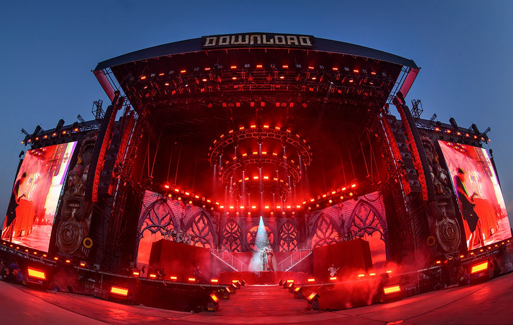
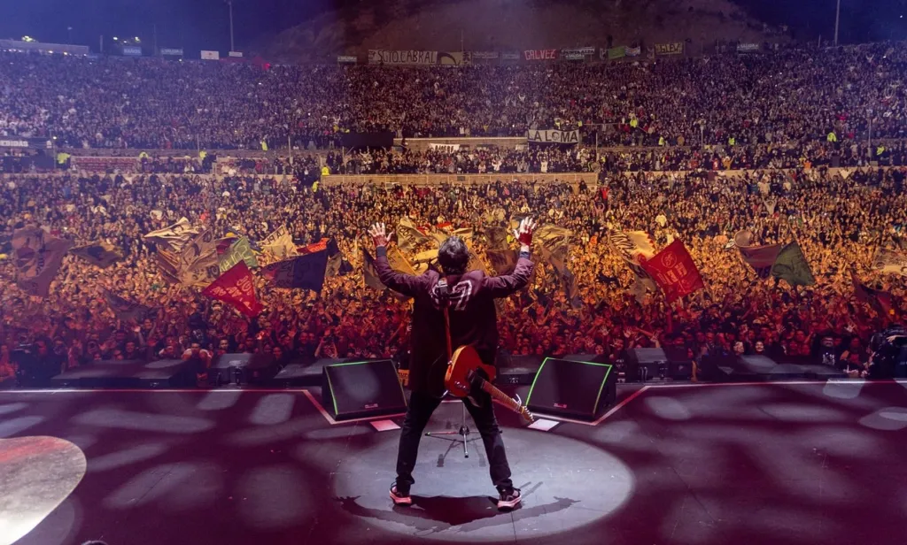
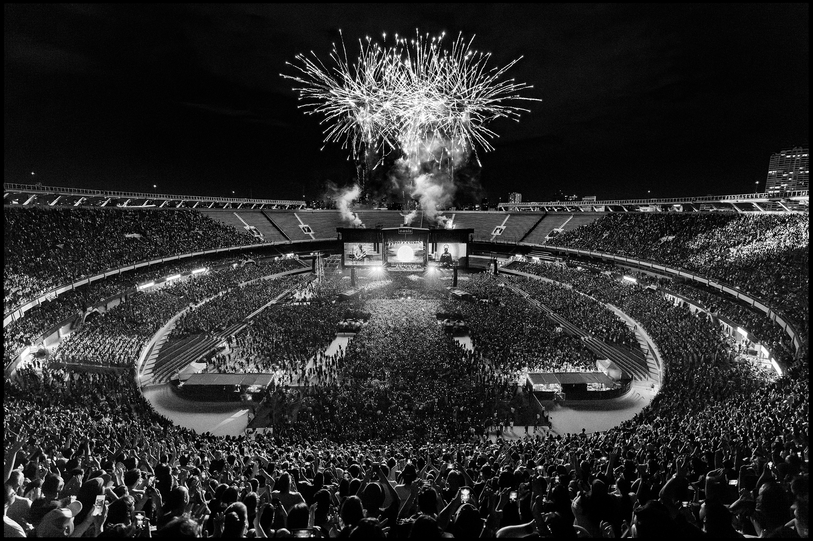
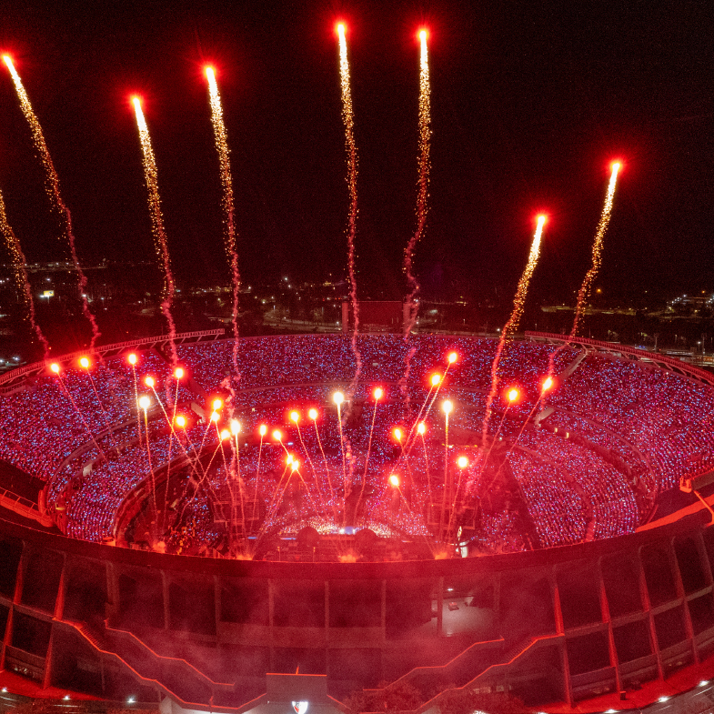

Twenty One Pilots
Twenty One Pilots se presentó por primera vez con un show propio y en solitario en Argentina el 28 y 29 de enero de 2025 en el Movistar Arena de Buenos Aires, durante su gira "The Clancy World Tour"
ConcertWeek
Revive la energía, las luces y los mejores momentos fotografiados durante los conciertos de la temporada.

Twenty One Pilots se presentó por primera vez con un show propio y en solitario en Argentina el 28 y 29 de enero de 2025 en el Movistar Arena de Buenos Aires, durante su gira "The Clancy World Tour"

El concierto de Linkin Park en Argentina durante la gira From Zero World Tour se realizó el 31 de octubre de 2025 en el Parque de la Ciudad de Buenos Aires.

Bring Me the Horizon se presentó en Argentina el domingo 8 de diciembre de 2024 en el Movistar Arena de Buenos Aires

Los Piojos se presentaron en el Estadio River Plate el sábado 21 y el domingo 22 de junio de 2025, marcando su regreso al Monumental tras 16 años

Los shows de Oasis en el Estadio River Plate ocurrieron el 15 y 16 de noviembre de 2025 como parte de su gira mundial Oasis Live '25.

Dua Lipa se presentó con gran éxito en el Estadio River Plate los días 7 y 8 de noviembre de 2025 como parte de su Radical Optimism Tour